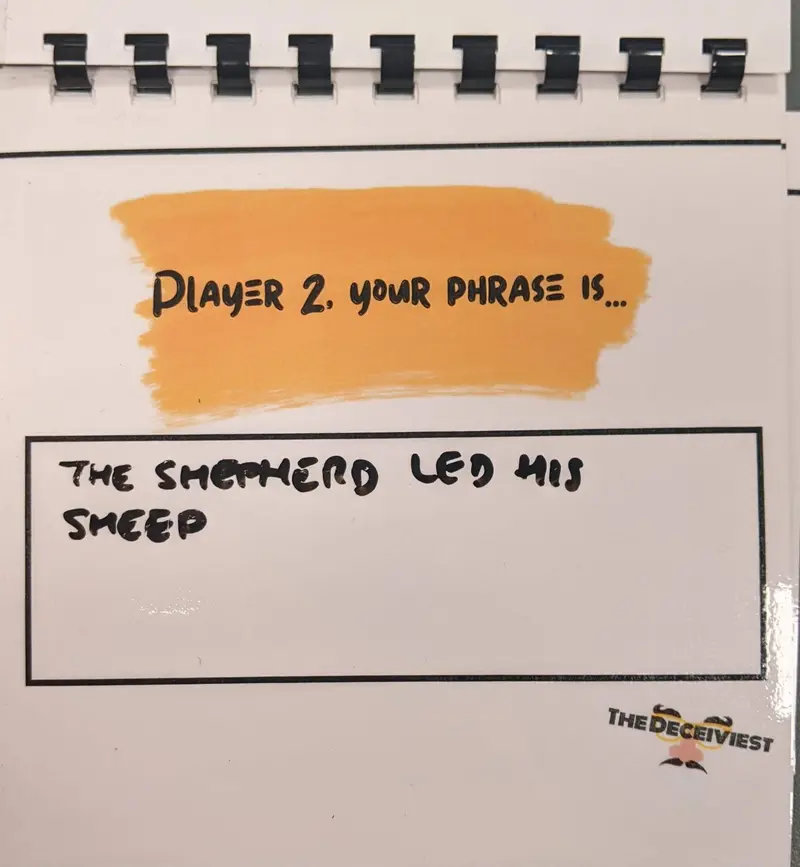
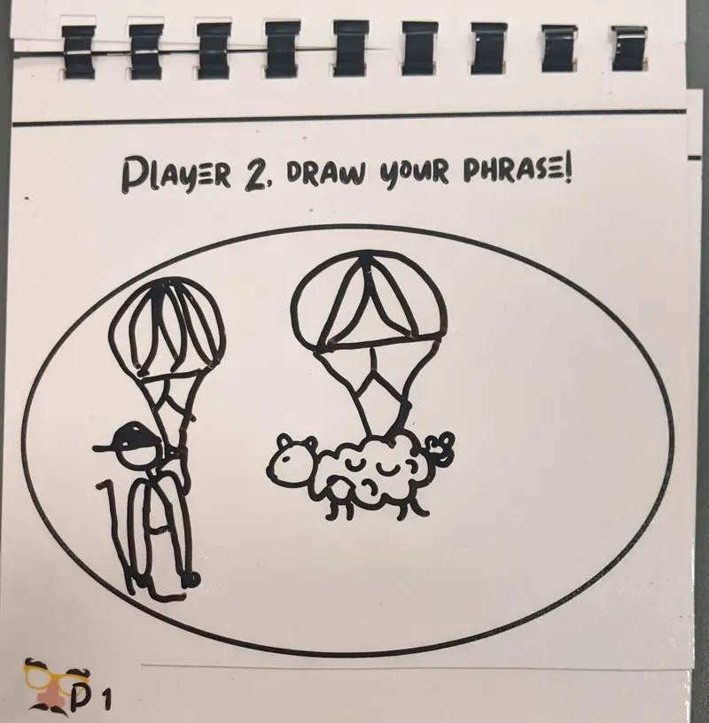
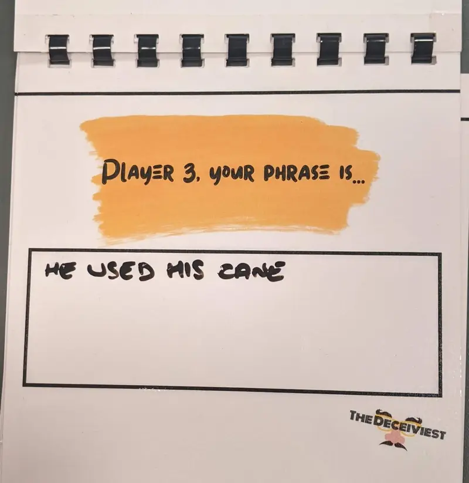
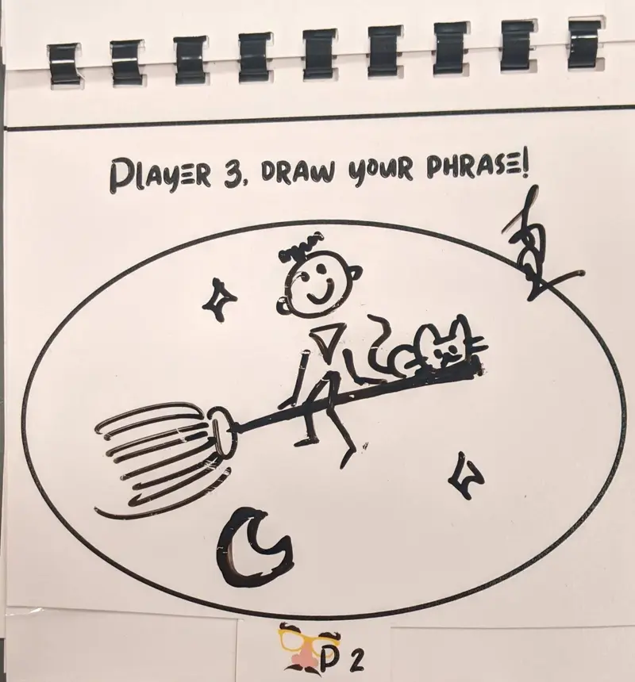
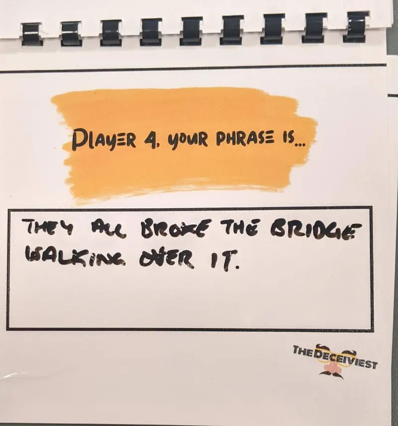
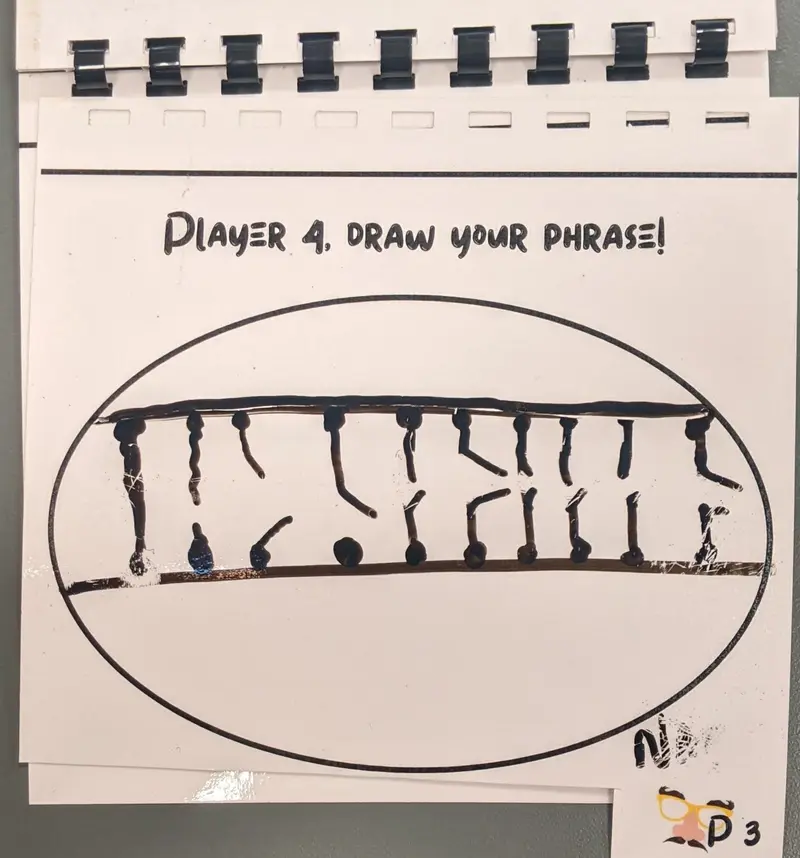
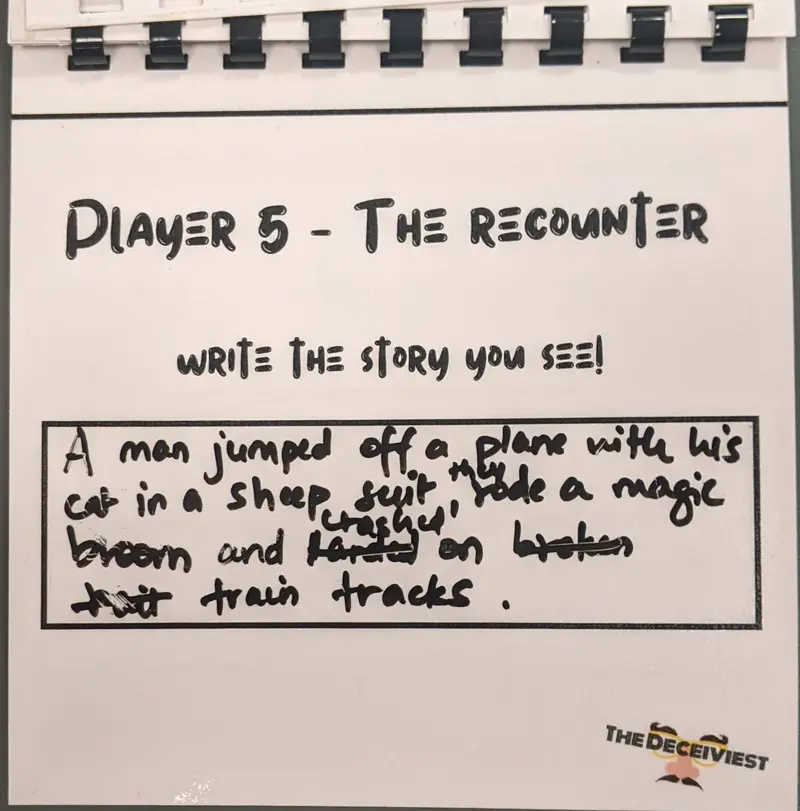
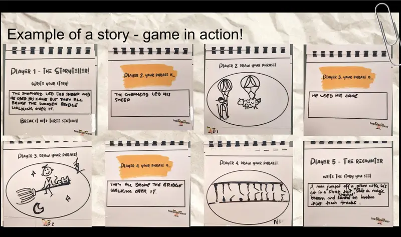

The Deceiviest Social Game
Playfulness operates as a social contract. It creates an alibi to try new ways of being, and I set out to coax people into being subversive.
- Format
- Five-player tabletop game
- Materials
- Image dice, flipbook, pens
- Methods
- Ludic design research, two playtest workshops, brainstorming sessions
- Year
- 2022








The shepherd, the sheep and the bridge
- Player 1 · The Storyteller
rolls image dice and writes a secret three-part sentence. - Player 2 · Deviator
draws their phrase, adding a few distractions. - Player 3 · Deviator
draws the next phrase, subtly distorting it. - Player 4 · Deviator
draws the last phrase, muddying it further. - Player 5 · The Recounter
sees only the drawings and rebuilds the story.
Overview
The Deceiviest is a five-player storytelling game designed to explore the difference between play and playfulness. Play is the structure: rules, turns, roles, time limits, a shared framework. Playfulness is what animates that structure: mischief, exaggeration, surprise, internal amusement, relational tension.
I tested with people how and when subversive gameplay feels freeing or frustrating, and whether a complex narrative system can create space for safe mischief rather than competition alone.
Context
Much adult play is instrumentalized for learning or productivity. I was interested in adult playfulness for its own sake, and in environments where adults can experiment, improvise and temporarily step outside fixed roles.
Rather than writing a fixed story, I designed a narrative space. The system distributes authorship across players and creates conditions for ambiguity, trust and low-risk mischief.
How it plays
Player 1 rolls image dice and writes a short three-part sentence, dividing it across three pages of a flipbook. The story is kept secret. The flipbook is passed around: players 2, 3 and 4 become “deviators,” drawing their written phrase while adding extra elements to distract and subtly distort its meaning. The goal is to confuse player 5, the “recounter,” who must look only at the drawings and reconstruct the story in a new sentence.
At the end, each player reveals their contribution. In short: one person creates the story, the middle players try to mislead it and the last player tries to recover the truth.
Process
The project drew on research into ludic design, the “magic circle” of play and spatial narrative theory. Instead of scripting outcomes, I built a structure that constrains possibilities while preserving openness.
I facilitated two workshops of five participants. After playing, they reflected on when they felt most playful and what limited their experience. I also led brainstorming sessions on when people feel most playful: with people they trust, by themselves, in nature, with children; while trying new things, revealing information, being creative. That feedback shaped each iteration: I simplified roles, removed the point system and streamlined sentence construction to reduce confusion and strengthen flow.

What I learned
- Playfulness can’t be forced through mechanics alone.It depends on emotional preconditions: clarity, trust and permission.
- Subversion works in a well-balanced system.Too much ambiguity creates confusion; too much structure suppresses play.
- Where people play matters as much as the game.Designing for play means designing relational conditions. Facilitation, atmosphere and iteration matter as much as rules.
Just some good, clean, subversive fun.